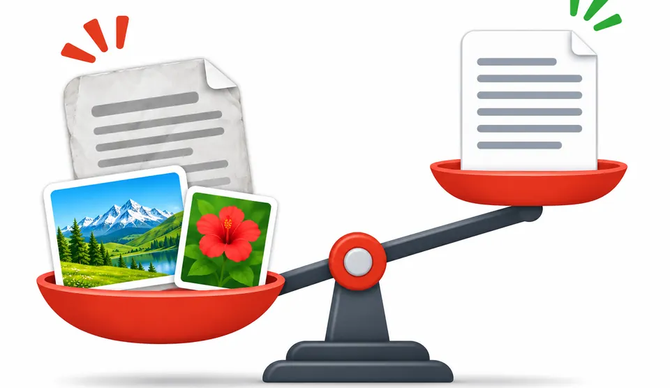
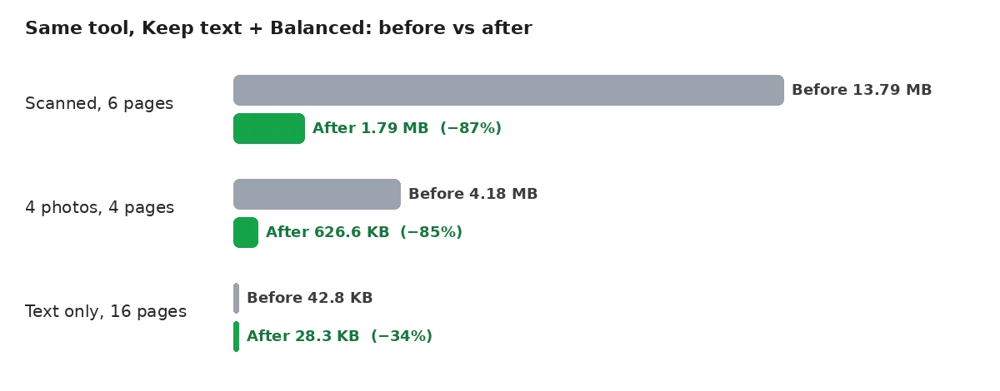
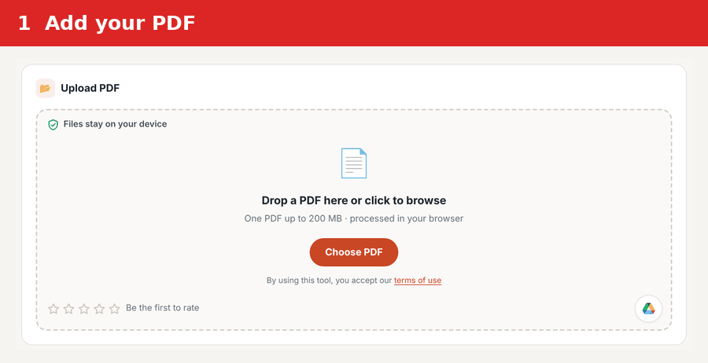
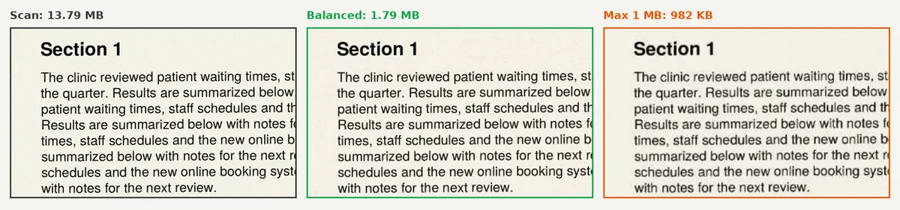

How to Compress a PDF: Settings That Work
To compress a PDF, shrink the images inside it and leave the text alone. Scans and photo-heavy files often lose 80% or more this way. Text-only files barely change, because text is already small. Pick a stronger level only when you must meet a strict size limit.
The free Compress PDF tool on PDFdukan does this in your browser, with no upload.
What makes a PDF so large?
Images make most PDFs large, not words. A scanned page is one big photo of paper. A report with phone photos carries every pixel the camera captured, even when the page shows the photo small.

Text costs very little by comparison. Our 16-page text report weighed only 42.8 KB, about 2.7 KB per page. Fonts add some weight, but in our test file they were already trimmed to the letters used.
That split explains why results vary so much. A file full of pictures has plenty to remove. A file of plain text has almost nothing, so no setting will make it dramatically smaller.

How to compress a PDF, step by step
Compressing a PDF in the PDFdukan tool takes four steps, and the file stays on your device.
- Open the Compress PDF tool and add one PDF, up to 200 MB.
- Leave "Keep text" selected unless you need an exact size in KB.
- Choose Light, Balanced or Strong, then press Compress PDF.
- Check the new size, open the file once, then download it.

Opening the result matters more than people think. A size number tells you nothing about whether a signature line or small print still reads well. One quick look at the busiest page saves a resend later.
Which setting fits which PDF?
Keep text on Balanced suits most PDFs, including scans. In our test it shrank a scan more than the "Pages as images" mode did, and it kept every link and form field.
| Test PDF | Setting | Before | After |
|---|---|---|---|
| Scan, 6 pages | Keep text, Balanced | 13.79 MB | 1.79 MB |
| Scan, 6 pages | Pages as images, Balanced | 13.79 MB | 1.97 MB |
| Scan, 6 pages | Pages as images, max 1,000 KB | 13.79 MB | 982 KB |
| Report with 4 photos | Keep text, Balanced | 4.18 MB | 627 KB |
| Report with 4 photos | Keep text, Strong | 4.18 MB | 275 KB |
| Text only, 16 pages | Keep text, Balanced | 42.8 KB | 28.3 KB |
Choose "Pages as images" only when a form demands an exact limit, such as 1 MB. That mode turns every page into a picture, so you lose selectable text. In our test the 1 MB scan still read clearly, but letters looked slightly softer.

Strong suits photo reports headed for email or a phone screen. Light suits documents that may be printed, such as certificates or designed brochures. Balanced is the default, and it handled all three of our test files without unreadable text.
How do compression levels compare across tools?
Compression levels mean different things in different tools, so the same name can give very different files. The table lists what each tool says about its own levels.
| Tool | Levels | What the tool says |
|---|---|---|
| PDFdukan | Light, Balanced, Strong | Photos reduced to about 220, 150 or 110 DPI; text kept |
| ihatepdf | Light, Medium, Heavy | 300, 150 and 72 DPI, for 20–30%, 40–50% and 60–70% savings |
| Adobe Acrobat online | High, Medium, Low | Files up to 2GB |
| Smallpdf | Basic, Moderate, Strong | Basic is free; Moderate and Strong are Pro |
DPI is the number to watch. In our test, scanned text at about 150 DPI stayed easy to read on screen. Lower numbers mean smaller files and softer letters.
How do you make a smaller PDF from the start?
A smaller PDF starts with smaller pictures, before the PDF even exists. Shrink large photos before you insert them into a document, and the PDF stays light without any extra step.
Office apps offer a size choice when you save as PDF. Microsoft lists "Minimum size (publishing online)" for PowerPoint, Excel and Visio when file size matters more than print quality. In Word, the PDF options do not offer that choice.
On a Mac, Preview can shrink a PDF without any website. Apple's steps are File › Export, then "Reduce File Size" in the Quartz Filter menu. Apple warns that the result may be of lower quality than the original.
Scanner settings matter too, since a scan is only as heavy as the picture it saves. Our guide to scanning documents with your phone covers those settings.
What does compression change inside a PDF?
Compression in "Keep text" mode changes only the pictures inside a PDF. In our test, text stayed selectable, and links, form fields and bookmarks stayed in place.
"Pages as images" changes far more. Every page becomes a single picture, so search, copy and screen readers stop working on the text. Keep the original file if you may need those later.
Compression rewrites the file, which can invalidate a certificate-based digital signature. ihatepdf warns that any change breaks one, while Adobe says its tool keeps signatures. A drawn signature image always survives. To be safe, compress before signing.
Frequently Asked Questions
How do you compress a PDF without losing quality?
Use "Keep text" on Light or Balanced, which shrinks only the pictures. Text and lines stay sharp because they are not images. Check the busiest page at full zoom before you send the file.
How much can a scanned PDF shrink?
A scanned PDF can shrink by 80% or more, because every page is a large image. Our 13.79 MB test scan became 1.79 MB on Balanced. Results depend on the scan resolution and color.
Does compressing a PDF remove the searchable text from a scan?
No, "Keep text" keeps any searchable text layer a scan already has. "Pages as images" removes it, because each page turns into a plain picture. To add searchable text first, use the searchable PDF converter.
Can I compress a PDF on a Mac without a website?
Yes, Preview on a Mac can compress a PDF offline. Choose File › Export, then pick "Reduce File Size" under Quartz Filter. Apple notes the result may look lower in quality.
Why is my PDF from Word so large?
A PDF from Word is usually large because of the photos inside it. Text adds very little weight. Shrink the photos before inserting them, or compress the finished PDF once.
Should I compress before or after merging PDFs?
Compress after merging, once, at the end. Each compression pass shrinks images again and can soften them further. Merging first also lets you check the final size against the limit.
Will compressing break a digital signature?
Compressing can break a certificate-based digital signature, because the file changes after signing. Tools disagree on this, so do not rely on it. Compress the document first, then sign it.